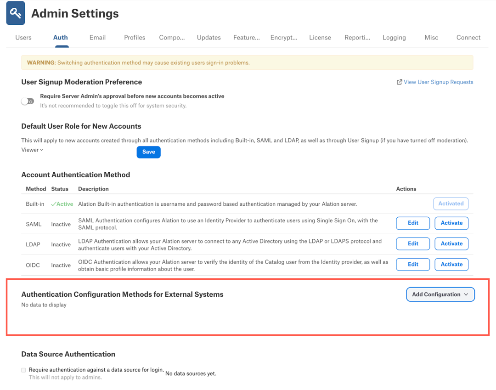

Authentication Configuration Methods for External Systems¶
Alation Cloud Service Applies to Alation Cloud Service instances of Alation
Customer Managed Applies to customer-managed instances of Alation
Applies from version 2022.3
For the data sources that support authentication with external systems, Server Admins can create the required authentication configurations on the Admin Settings > Authentication page.
Create a New Configuration¶
We recommend performing this configuration after completing the preliminary configuration steps in the relevant external systems. Configurations can be created for the AWS IAM, OAuth, Azure Keyvault, and AWS Secrets Manager authentication methods.
To create a new configuration:
Prepare the information from your external system. Most of the required information can be found in the settings of authentication applications created for Alation. See the sections below for information about the required and optional fields:
In Alation, go to Admin Settings > Authentication.
At the bottom of the page, locate the section Authentication Configuration Methods for External Systems.
Note
If any configurations already exist, you’ll see them listed in the table under Authentication Configuration Methods for External Systems. If they were created on the Alation server backend in a previous release, the columns Created At, Created By, Updated By, and Updated At will contain the value
Not Set. These fields only capture the changes made in the user interface. For new configurations created in the user interface, these columns will be populated. For the configurations created on the server backend, the Updated At column will be populated if edits are made to the configuration in the user interface.Click the Add Configuration button to the right of the section title to expand the list of options and then click the name of the appropriate plug-in. The corresponding settings page will open in a new browser tab.
On the configuration method editor page, fill in the appropriate information.
Note
When creating a new configuration, you can switch between the plug-in types using the Method list. After saving a configuration, the Method field becomes read-only.
After populating the fields, click Save to save the configuration. If you get an error while saving, see the Troubleshooting section for help.
Refresh the Authentication page. The new configuration will be displayed in the table.
Continue the configuration in the data source settings. You will need to associate your specific data source with the configuration you created under Authentication Configuration Methods for External Systems. The steps to configure a data source depend on the database type. Follow the relevant connector documentation to complete this configuration.
{kind=link}
{kind=link}
Troubleshooting¶
Something Went Wrong¶
In some rare cases, you may see the Something went wrong error on the Authentication page or in the configuration editor when saving a configuration.
This error may indicate that AuthService has been stopped. To resolve this issue, check the status of AuthService and restart it. For information about starting AuthService, see, for example, Enable AuthService.
{kind=link}
Changes Unsaved¶
The Changes unsaved error message may appear after clicking the Save button on the configuration editor page.
{kind=link}
This error means that some fields do not pass validation. Make sure you enter the values in the required format.
AWS IAM¶
Use this section to review the information you will need to provide in the Alation user interface when configuring authentication for your data source with AWS IAM.
{kind=link}
Field |
Required? |
Description |
|---|---|---|
Config Name |
Yes |
A name for the configuration that is being created. The Config Name value will be used to identify and manage the corresponding configuration on the Alation server.
|
STS Duration |
Yes |
The lifetime of the temporary credentials generated by the AWS STS service (in seconds). You can provide a value from 900 seconds (15 minutes) up to the maximum of 43200 seconds (12 hours). |
Region |
Yes |
The AWS region of the AWS account used for authentication. This field is a list containing all supported AWS regions. |
Cred Type |
No |
Type of authentication to use when the AWS Supported values:
|
SAML authenticate request XML |
No |
The request XML to be used for SAML authentication. |
Multi role flow |
No |
Indicates if multiple roles may be returned in the SAML response. Selected by default. |
Encode Relay State |
No |
Indicates if the relay state needs to be encoded. |
Redirect URL |
No |
The redirect URL for the identity provider. Mandatory if the configuration is used for SAML authentication. This should be a valid URL. |
Entity Id |
No |
A string value that represents the Entity ID used in the <Issuer> element of the <AuthNRequest>. This value is usually used when the same Alation instance is authenticated against different IdP endpoints. Uses the default of This value should be a valid URL. |
OAuth¶
Use this section to review the information you will need to provide in the Alation user interface when configuring authentication for your data source with Azure AD using the OAuth protocol.
{kind=link}
Field |
Required? |
Description |
|---|---|---|
Config Name |
Yes |
A name for the configuration that is being created. The Config Name value will be used to identify and manage the corresponding configuration on the Alation server.
|
Client Id |
Yes |
The client ID of the Azure AD application. |
Client Secret |
Yes |
The client secret of the Azure AD application. |
Scope |
Yes |
The scope of the request. Some examples can be |
Subject |
No |
This field indicates which claim in the token should be used as username,
for example: |
Token Buffer time |
No |
Buffer time to check the token validity before it expires so that the token can be refreshed before expiration. Set in minutes. Default: five minutes ( |
Grant Type |
No |
Grant types:
|
PKCE Verifier |
No |
Enable or disable Proof Key for Code Exchange in your authentication flow. Default: enabled. |
Authorize Endpoint URL |
Yes |
The Authorize Endpoint URL for the identity provider. This should be a valid URL. |
Redirect URL |
Yes |
Redirect URL for the identity provider. This should be a valid URL. |
Token Endpoint URL |
Yes |
Token URL for the identity provider. This should be a valid URL. |
User Info Endpoint URL |
Yes |
User Info Endpoint URL for the identity provider. This should be a valid URL. |
Azure Keyvault¶
Use this section to review the information you will need to provide in the Alation user interface when configuring authentication for extraction from your data source with Azure AD and Azure Keyvault.
{kind=link}
Field |
Required? |
Description |
|---|---|---|
Config Name |
Yes |
A name for the configuration that is being created. The Config Name value will be used to identify and manage the corresponding configuration on the Alation server.
|
Client Id |
Yes |
The client ID value of the Azure AD application. |
Client Secret |
Yes |
The client secret value of the Azure AD application. |
Tenant Id |
Yes |
The tenant ID value of the Azure AD application. |
Vault URL |
Yes |
The URL to access the Azure key vault. This should be a valid URL. |
AWS Secrets Manager¶
Applies from 2023.1.5
Use this section to review the information you will need to provide in the Alation user interface when configuring authentication for extraction from your data source with AWS Secrets Manager.
{kind=link}
Field |
Required? |
Description |
|---|---|---|
Config Name |
Yes |
A name for the configuration that is being created. The Config Name value will be used to identify and manage the corresponding configuration on the Alation server.
|
Region |
Yes |
The AWS region of the AWS account used for authentication. This field is a list containing all supported AWS regions. |
Authentication Type |
Yes |
Type of authentication to use. Supported values:
|
AWS Access Key |
Yes, if authentication type is IAM User. |
AWS Access Key |
AWS Secret Key |
Yes, if authentication type is IAM User. |
AWS Secret Key |
Role ARN |
Yes, if authentication type is IAM Role. |
Amazon Resource Name (ARN) of the role to be assumed. |
External ID |
Yes, if authentication type is IAM Role. |
External ID passed during the Assume Role operation. The external ID is needed to avoid the confused deputy problem*. |
STS Duration |
Yes, if authentication type is IAM Role. |
The lifetime of the temporary credentials generated by the AWS STS service (in seconds). You can provide a value from 900 seconds (15 minutes) up to the maximum of 43200 seconds (12 hours). |
* See this AWS documentation for more information on the confused deputy problem.
Reserved Config Names¶
On the Alation server, there are Config Names that are reserved and cannot be used when creating new configurations. These values are stored in these two alation_conf parameters:
alation.authentication.oidc.authservice_plugin_config = oauth_login_config
alation.authentication.oidc.authservice_plugin_test_config = oauth_login_test_config
Blocking Config Names¶
It is possible to block the creation of new configurations with specific names in the user interface or to hide existing configurations with specific names from the user interface. To prevent a configuration with a specific name from being created or visible, use the parameter alation.authentication.excluded_configs_in_auth_ui in alation_conf. The configurations with the names added to the list of values of this parameter, will not be visible in the Authentication Configuration Methods for External Systems table. Also, users will not be able to create a new configuration with any of the listed names.
Note
Alation Cloud Service customers can request server configuration changes through Alation Support.
On how to use alation_conf, see Using alation_conf. The Django server restart is required if the value of alation.authentication.excluded_configs_in_auth_ui is changed.
alation_supervisor restart web:*
View or Edit a Configuration¶
You can view and edit the settings of existing configurations. To view or edit a configuration:
In the Authentication Configuration Methods for External Systems table, click View/Edit for the configuration you want to view or edit. The configuration editor page will open in a new browser tab.
Edit the values as necessary.
Note
The fields Methods and Config Name cannot be changed.
Click Save.
Delete a Configuration¶
It is possible to delete existing configurations. Currently, Alation does not validate if the configuration that is being deleted is in use in the application. Before deleting a configuration, make sure it is not associated with any data sources by checking the settings of your data sources. To delete:
In the Authentication Configuration Methods for External Systems table, click Delete for the configuration you want to delete.
In the delete confirmation dialog that pops up, click Delete to confirm your action. The configuration will be deleted.